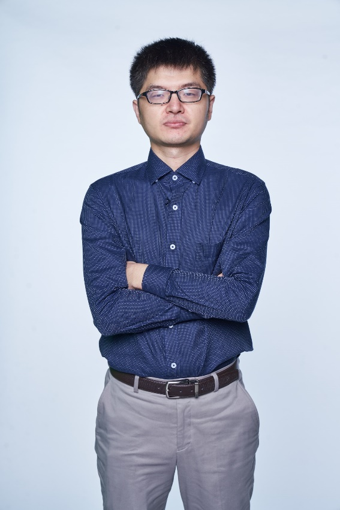

孙超，2013年中国科学技术大学自动化专业本科毕业，2018年新加坡南洋理工大学电气与电子工程学院博士毕业，2018-2022年于新加坡南洋理工大学从事博士后研究工作，现任北京航空航天大学人工智能研究院准聘副教授。研究方向为多智能体系统的鲁棒协同控制，分布式优化，分布式博弈。目前以第一作者在IEEE Transactions on Automatic Control， Automatica等期刊发表SCI期刊论文9篇。主持瓦伦堡-南洋理工大学校长博士后启动基金、北航双一流专项等项目两项。
任国际期刊编委1项（Review Editor），国际会议委员会成员两次（ICCA 2020,2022），中国指控学会集群智能与协同控制专委会委员，IEEE TAC、Automatica等期刊审稿人。获瓦伦堡-南洋理工大学校长博士后奖。